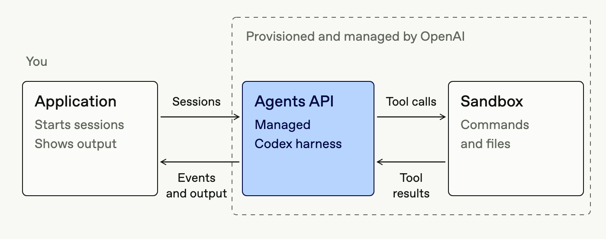
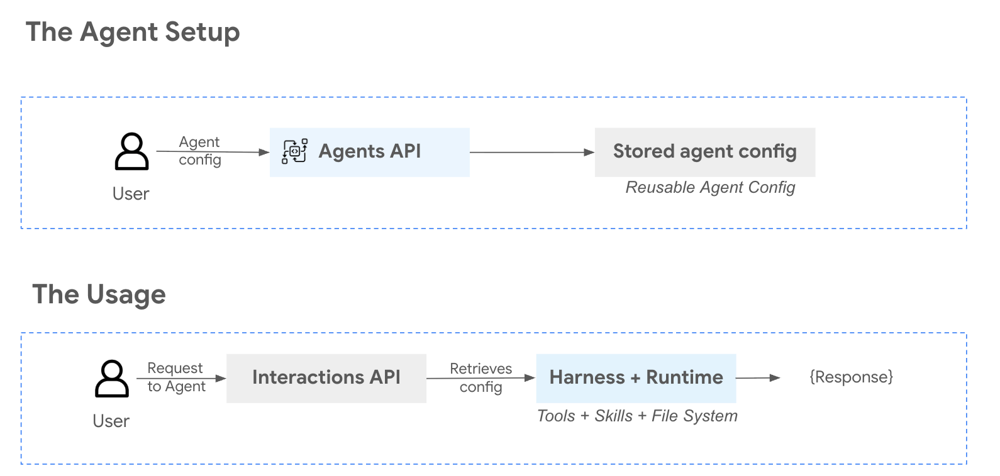
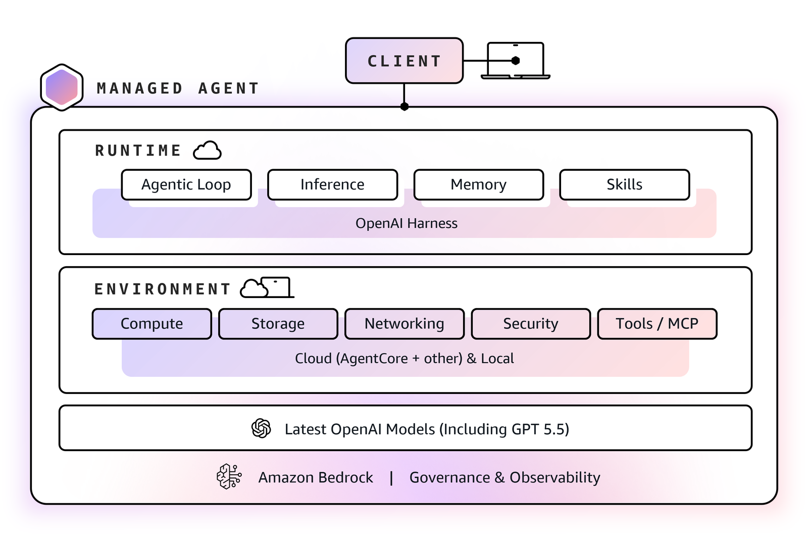
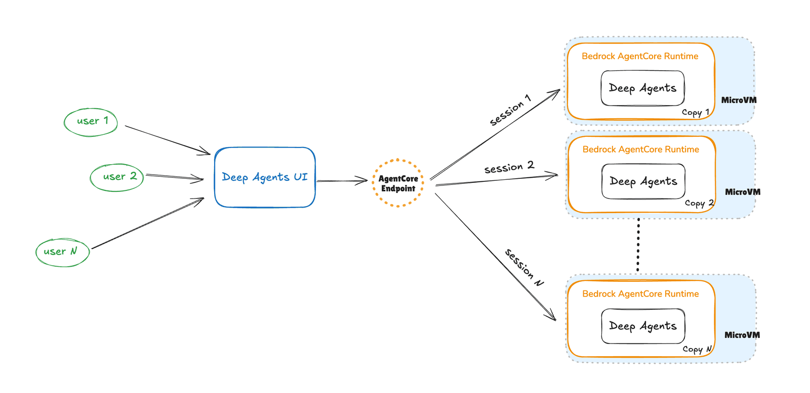
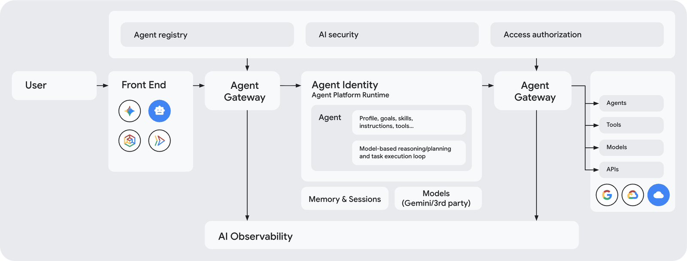
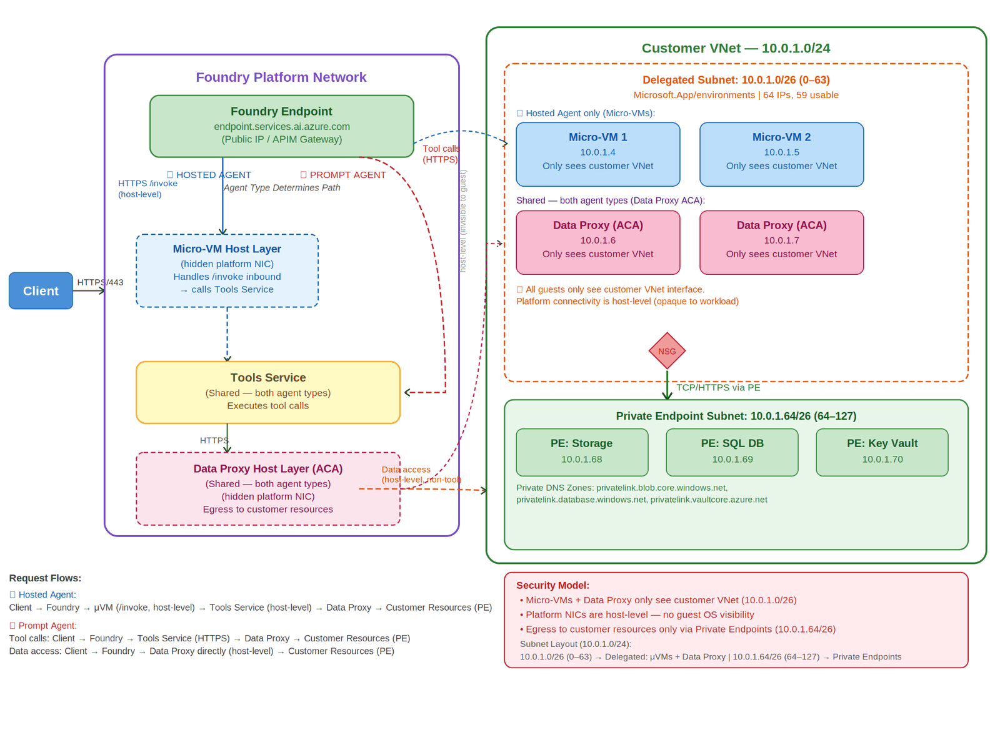
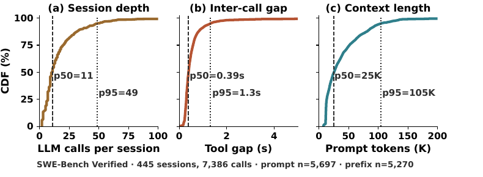
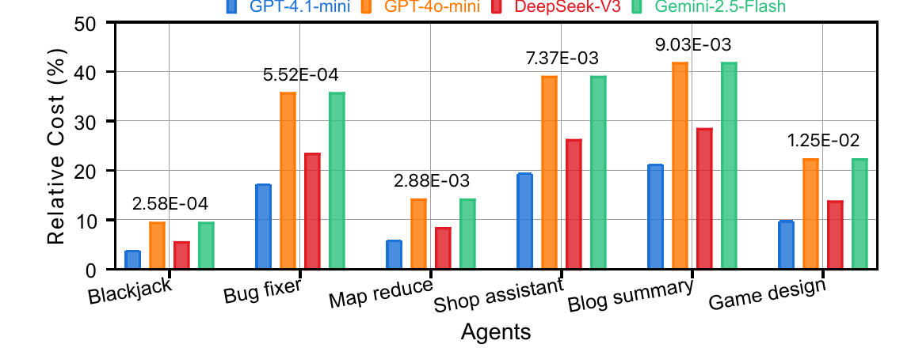

<title>Agent as a Service 综述</title>
<link rel="preconnect" href="https://fonts.googleapis.com">
<link rel="preconnect" href="https://fonts.gstatic.com" crossorigin>
<link rel="stylesheet" href="https://fonts.googleapis.com/css2?family=JetBrains+Mono:wght@400;600&family=Noto+Sans+SC:wght@400;500;700&family=Noto+Serif+SC:wght@600;900&display=swap">
<style>
/* Layout: a horizontal deck of article pages. Each page is one essay with a figure column; a fixed top rail navigates. */
:root {
  --paper: #f4f5f2;
  --panel: #ffffff;
  --ink: #15181b;
  --ink-2: #474d53;
  --ink-3: #6f767d;
  --rule: #d8dbd5;
  --accent: #0d5e69;
  --accent-soft: #dcebec;
  --c-session: #2a78d6;
  --c-model: #eb6834;
  --c-env: #1baf7a;
  --c-tool: #4a3aa7;
  --c-harness: #15181b;
  --figure-ground: #ffffff;
  --tile: #ffffff;
  --tile-line: #dfe2dc;
  --f-display: "Noto Serif SC", "Songti SC", "STSong", Georgia, serif;
  --f-body: "Noto Sans SC", "PingFang SC", "Microsoft YaHei", system-ui, sans-serif;
  --f-mono: "JetBrains Mono", ui-monospace, "SFMono-Regular", Menlo, monospace;
  --step--1: 0.8125rem;
  --step-0: 0.96875rem;
  --step-1: 1.15rem;
  --step-2: 1.5rem;
  --step-3: 2.1rem;
  --step-4: 3rem;
}
@media (prefers-color-scheme: dark) {
  :root:not([data-theme="light"]) {
    --paper: #111416; --panel: #191d20; --ink: #eceeec; --ink-2: #b5bbba; --ink-3: #8a9291; --rule: #2d3235;
    --accent: #5bb7c2; --accent-soft: #1b3236;
    --c-session: #3987e5; --c-model: #d95926; --c-env: #199e70; --c-tool: #9085e9; --c-harness: #eceeec;
    --figure-ground: #f3f4f2;
    --tile: #f1f2ef; --tile-line: #3a4044;
    color-scheme: dark;
  }
}
:root[data-theme="dark"] {
  --paper: #111416; --panel: #191d20; --ink: #eceeec; --ink-2: #b5bbba; --ink-3: #8a9291; --rule: #2d3235;
  --accent: #5bb7c2; --accent-soft: #1b3236;
  --c-session: #3987e5; --c-model: #d95926; --c-env: #199e70; --c-tool: #9085e9; --c-harness: #eceeec;
  --figure-ground: #f3f4f2;
  --tile: #f1f2ef; --tile-line: #3a4044;
  color-scheme: dark;
}
* { box-sizing: border-box; }
html, body { height: 100%; }
body { background: var(--paper); color: var(--ink); font-family: var(--f-body); font-size: var(--step-0); line-height: 1.75; }
a { color: var(--accent); }
a:focus-visible, button:focus-visible, select:focus-visible { outline: 2px solid var(--accent); outline-offset: 2px; }

/* rail */
.rail { position: sticky; top: env(safe-area-inset-top, 0px); z-index: 20; background: color-mix(in srgb, var(--paper) 92%, transparent); backdrop-filter: blur(6px); border-bottom: 1px solid var(--rule); }
.rail-in { max-width: 1180px; margin: 0 auto; padding: 10px 20px; display: flex; gap: 14px; align-items: center; }
.rail .brand { font-family: var(--f-display); font-weight: 900; font-size: var(--step-1); letter-spacing: .01em; white-space: nowrap; }
.rail .brand small { font-family: var(--f-mono); font-weight: 400; font-size: var(--step--1); color: var(--ink-3); margin-left: 8px; }
.rail .spacer { flex: 1; }
.rail select { font: inherit; font-size: var(--step--1); padding: 6px 8px; border-radius: 6px; border: 1px solid var(--rule); background: var(--panel); color: var(--ink); max-width: 46vw; }
.rail button { font: inherit; font-size: var(--step--1); border: 1px solid var(--rule); background: var(--panel); color: var(--ink); border-radius: 6px; padding: 6px 12px; cursor: pointer; }
.rail button:hover { border-color: var(--accent); }
.rail button:disabled { opacity: .4; cursor: default; }
.counter { font-family: var(--f-mono); font-size: var(--step--1); color: var(--ink-3); font-variant-numeric: tabular-nums; white-space: nowrap; }
.progress { height: 2px; background: var(--rule); }
.progress i { display: block; height: 100%; background: var(--accent); width: 0; transition: width .25s ease; }

/* pages */
.deck { max-width: 1180px; margin: 0 auto; padding-inline: 20px; padding-block: 28px 64px; }
.page { display: grid; gap: 28px; animation: pagein .28s ease; }
@keyframes pagein { from { transform: translateX(10px); } to { transform: none; } }
@media (prefers-reduced-motion: reduce) { .page { animation: none; } .progress i { transition: none; } }
.kicker { font-family: var(--f-mono); font-size: var(--step--1); letter-spacing: .08em; text-transform: uppercase; color: var(--ink-3); display: flex; gap: 10px; align-items: center; flex-wrap: wrap; }
.kicker .dot { width: 9px; height: 9px; border-radius: 2px; display: inline-block; }
h1, h2, h3 { font-family: var(--f-display); text-wrap: balance; margin: 0; line-height: 1.25; }
h1 { font-size: var(--step-4); font-weight: 900; letter-spacing: -.01em; }
h2 { font-size: var(--step-3); font-weight: 900; }
h3 { font-size: var(--step-1); font-weight: 600; margin-top: .4em; }
p { margin: 0; }
.lede { font-size: var(--step-1); color: var(--ink-2); max-width: 46em; line-height: 1.7; }
.cols { display: grid; grid-template-columns: minmax(0, 1fr) minmax(0, 1.25fr); gap: 36px; align-items: start; }
.cols.even { grid-template-columns: minmax(0, 1fr) minmax(0, 1fr); }
.cols.wide-left { grid-template-columns: minmax(0, 1.3fr) minmax(0, 1fr); }
@media (max-width: 880px) { .cols, .cols.even, .cols.wide-left { grid-template-columns: minmax(0, 1fr); } h1 { font-size: 2.2rem; } h2 { font-size: 1.7rem; } }
.prose { display: grid; gap: 14px; max-width: 40em; min-width: 0; }
.prose ul { margin: 0; padding-left: 1.2em; display: grid; gap: 6px; }
.prose strong { font-weight: 700; }
.term { font-family: var(--f-mono); font-size: .92em; background: var(--accent-soft); padding: 0 4px; border-radius: 3px; }
.figure { min-width: 0; display: grid; gap: 10px; }
.figure figcaption, .cap { font-size: var(--step--1); color: var(--ink-3); line-height: 1.6; }
.figure .frame { background: var(--panel); border: 1px solid var(--rule); border-radius: 8px; padding: 14px; overflow-x: auto; }
.figure .frame.photo { background: var(--figure-ground); }
.figure img { display: block; width: 100%; height: auto; }
.stack { display: grid; gap: 22px; min-width: 0; }
.divider { border: 0; border-top: 1px solid var(--rule); margin: 4px 0; }
.section-label { font-family: var(--f-mono); font-size: var(--step--1); letter-spacing: .08em; text-transform: uppercase; color: var(--accent); border-top: 1px solid var(--rule); padding-top: 12px; }

/* works list */
.works { display: grid; grid-template-columns: repeat(auto-fill, minmax(260px, 1fr)); gap: 14px; }
.work { border-top: 2px solid var(--ink); padding-top: 10px; display: grid; gap: 6px; align-content: start; min-width: 0; }
.work h4 { margin: 0; font-family: var(--f-body); font-size: var(--step-0); font-weight: 700; }
.work .where { font-family: var(--f-mono); font-size: var(--step--1); color: var(--ink-3); }
.work p { font-size: var(--step--1); color: var(--ink-2); line-height: 1.65; }

/* refs */
.ref { font-family: var(--f-mono); font-size: .72em; vertical-align: super; line-height: 0; margin-left: 2px; border: 0; background: none; color: var(--accent); cursor: pointer; padding: 0 1px; }
.ref:hover { text-decoration: underline; }
.pop { position: fixed; z-index: 50; max-width: min(420px, calc(100vw - 32px)); background: var(--panel); border: 1px solid var(--rule); border-radius: 8px; padding: 12px 14px; box-shadow: 0 8px 28px rgba(0,0,0,.18); font-size: var(--step--1); line-height: 1.55; }
.pop .t { font-weight: 700; color: var(--ink); }
.pop .m { color: var(--ink-3); font-family: var(--f-mono); margin-top: 4px; }
.pop .l { display: flex; gap: 12px; margin-top: 8px; flex-wrap: wrap; }

/* charts */
.chart { width: 100%; height: auto; display: block; font-family: var(--f-body); }
.chart text { fill: var(--ink-2); font-size: 12px; }
.chart .val { fill: var(--ink); font-family: var(--f-mono); font-size: 11.5px; }
.chart .axis { stroke: var(--rule); }
.chart .grid { stroke: var(--rule); stroke-dasharray: 2 3; }
.chart .hit { fill: transparent; cursor: default; }
.chart .hit:hover + .mark, .chart g.row:hover .mark { opacity: .8; }
.legend { display: flex; gap: 14px; flex-wrap: wrap; font-size: var(--step--1); color: var(--ink-2); }
.legend span { display: inline-flex; gap: 6px; align-items: center; }
.legend i { width: 10px; height: 10px; border-radius: 2px; display: inline-block; }
.tip { position: fixed; z-index: 40; pointer-events: none; background: var(--ink); color: var(--paper); font-size: 12px; padding: 6px 9px; border-radius: 5px; max-width: 300px; line-height: 1.45; }
.chart-title { font-weight: 700; font-size: var(--step-0); }

/* diagram svg */
.dgm { width: 100%; height: auto; display: block; font-family: var(--f-body); }
.dgm text { fill: var(--ink); }
.dgm .muted { fill: var(--ink-3); }
.dgm .sub { fill: var(--ink-2); }
.dgm .boxline { fill: var(--panel); stroke: var(--rule); }
.dgm .svc { fill: none; stroke: var(--ink-3); stroke-dasharray: 6 5; }
.dgm .harness { fill: var(--panel); stroke: var(--c-harness); stroke-width: 2; }
.dgm .chip { fill: var(--paper); stroke: var(--rule); }
.dgm .flow { stroke: var(--ink-3); fill: none; stroke-width: 1.4; }
.dgm .port:hover { opacity: .85; }
.dgm-wrap { overflow-x: auto; }
#model-dgm > svg, #evo-dgm > svg { min-width: 680px; }

/* figure numbers and cross references */
.fignum { font-family: var(--f-mono); font-weight: 600; color: var(--ink); margin-right: .6em; white-space: nowrap; }
.xref { margin: 0 .2em; }
.xref, .pref { color: var(--accent); cursor: pointer; text-decoration: none; border-bottom: 1px dotted currentColor; }
.xref:hover, .pref:hover { border-bottom-style: solid; }

/* vendor definitions */
.vdef { display: grid; grid-template-columns: minmax(0, 1fr) minmax(0, 1.15fr); gap: 32px; align-items: start; border-top: 1px solid var(--rule); padding-top: 22px; }
@media (max-width: 880px) { .vdef { grid-template-columns: minmax(0, 1fr); } }
.vdef-text { display: grid; gap: 12px; min-width: 0; }
.vhead { display: flex; gap: 12px; align-items: center; }
.vhead h3 { margin: 0; font-size: var(--step-1); }
.vmeta { font-family: var(--f-mono); font-size: var(--step--1); color: var(--ink-3); }
.vlogo { width: 44px; height: 44px; flex: none; border-radius: 11px; background: var(--tile); border: 1px solid var(--tile-line); display: grid; place-items: center; }
.vlogo img { width: 26px; height: 26px; display: block; }
.vdef blockquote { margin: 0; padding: 4px 0 4px 16px; border-left: 3px solid var(--accent); font-family: Georgia, "Times New Roman", var(--f-display); font-size: 1.02rem; line-height: 1.6; color: var(--ink); font-style: italic; }
.vdef .tr { color: var(--ink-2); font-size: var(--step--1); line-height: 1.75; }
.vterms { display: flex; flex-wrap: wrap; gap: 6px; align-items: center; }
.vt-label { font-size: 12px; color: var(--ink-3); margin-right: 4px; }
.vt { font-family: var(--f-mono); font-size: 12px; padding: 2px 8px; border-radius: 4px; background: var(--accent-soft); color: var(--ink); }

/* term map */
.tmap { overflow-x: auto; border: 1px solid var(--rule); border-radius: 8px; background: var(--panel); }
.tmap table { border-collapse: collapse; width: 100%; min-width: 980px; font-size: 12.5px; }
.tmap th, .tmap td { padding: 10px 10px; border-bottom: 1px solid var(--rule); text-align: left; vertical-align: top; line-height: 1.5; }
.tmap thead th { background: var(--panel); font-weight: 700; vertical-align: bottom; }
.tmap thead th .lg { display: flex; gap: 8px; align-items: center; }
.tmap thead th img { width: 18px; height: 18px; }
.tmap thead th small { display: block; font-weight: 400; color: var(--ink-3); font-size: 11px; }
.tmap tbody th { width: 150px; font-weight: 700; border-left: 4px solid var(--rule); }
.tmap tbody th small { display: block; font-weight: 400; color: var(--ink-3); }
.tmap td code { font-family: var(--f-mono); font-size: 11.5px; background: var(--accent-soft); padding: 1px 5px; border-radius: 3px; -webkit-box-decoration-break: clone; box-decoration-break: clone; line-height: 1.9; }
.tmap td { min-width: 128px; }
.tmap td.na { color: var(--ink-3); }

/* model figure */
.model-frame { padding: 8px; background-image: radial-gradient(var(--rule) 1px, transparent 1.2px); background-size: 18px 18px; }
#model-dgm > svg { min-width: 920px; }
.ch-legend { display: flex; flex-wrap: wrap; gap: 8px; }
.ch-legend button { font: inherit; font-size: 12.5px; display: inline-flex; align-items: center; gap: 8px; border: 1px solid var(--rule); background: var(--panel); color: var(--ink); padding: 5px 12px 5px 6px; border-radius: 999px; cursor: pointer; }
.ch-legend button i { width: 18px; height: 18px; border-radius: 50%; display: inline-block; }
.ch-legend button small { color: var(--ink-3); font-family: var(--f-mono); font-size: 11px; }
.ch-legend button[aria-pressed="true"] { border-color: var(--ink); }
.dgm .ch { transition: opacity .2s ease; }
.dgm[data-hl] .ch { opacity: .16; }
.dgm[data-hl="session"] .ch-session, .dgm[data-hl="model"] .ch-model, .dgm[data-hl="env"] .ch-env, .dgm[data-hl="tool"] .ch-tool { opacity: 1; }
.dgm .flowline { stroke-dasharray: 5 6; animation: flow 1.6s linear infinite; }
@keyframes flow { to { stroke-dashoffset: -22; } }
@media (prefers-reduced-motion: reduce) { .dgm .flowline { animation: none; } .dgm .ch { transition: none; } }
.matrix tbody th .mlogo { display: inline-block; width: 16px; height: 16px; vertical-align: -3px; margin-right: 6px; }
.tmap thead th img { display: block; flex: none; }
.matrix .ref { vertical-align: baseline; font-size: 11px; line-height: 1.4; border: 1px solid var(--rule); border-radius: 3px; padding: 0 5px; margin: 0 2px 0 0; }
.matrix .mrefs { display: block; font-weight: 400; font-size: 11px; color: var(--ink-3); margin-top: 4px; }

/* matrix */
.matrix-tools { display: flex; gap: 8px; flex-wrap: wrap; }
.matrix-tools button { font: inherit; font-size: var(--step--1); border: 1px solid var(--rule); background: var(--panel); color: var(--ink-2); padding: 5px 10px; border-radius: 999px; cursor: pointer; }
.matrix-tools button[aria-pressed="true"] { background: var(--ink); color: var(--paper); border-color: var(--ink); }
.matrix { overflow-x: auto; border: 1px solid var(--rule); border-radius: 8px; background: var(--panel); }
.matrix table { border-collapse: collapse; width: 100%; min-width: 860px; font-size: var(--step--1); }
.matrix th, .matrix td { text-align: left; vertical-align: top; padding: 9px 10px; border-bottom: 1px solid var(--rule); line-height: 1.5; }
.matrix thead th { font-weight: 700; color: var(--ink); position: sticky; top: 0; background: var(--panel); }
.matrix thead th .bar { display: block; height: 3px; border-radius: 2px; margin-bottom: 6px; }
.matrix tbody th { font-weight: 700; min-width: 170px; }
.matrix tbody th small { display: block; font-weight: 400; color: var(--ink-3); font-family: var(--f-mono); }
.matrix .grp td { background: var(--accent-soft); color: var(--ink); font-weight: 700; font-family: var(--f-mono); font-size: 12px; letter-spacing: .05em; }
.own { display: inline-block; font-family: var(--f-mono); font-size: 11px; padding: 0 6px; border-radius: 3px; margin-right: 4px; border: 1px solid currentColor; white-space: nowrap; }
.own.h { color: var(--accent); }
.own.b { color: var(--ink-3); }
.own.o { color: var(--c-model); }
.own.n { color: var(--ink-3); border-style: dashed; }
.matrix td.na { color: var(--ink-3); }

/* stat line */
.facts { display: grid; grid-template-columns: repeat(auto-fit, minmax(150px, 1fr)); gap: 0; border-top: 1px solid var(--rule); border-bottom: 1px solid var(--rule); }
.fact { padding: 12px 14px 12px 0; display: grid; gap: 2px; }
.fact b { font-family: var(--f-mono); font-size: var(--step-2); font-weight: 600; font-variant-numeric: tabular-nums; }
.fact span { font-size: var(--step--1); color: var(--ink-3); line-height: 1.45; }

/* toc */
.toc { display: grid; grid-template-columns: repeat(auto-fill, minmax(240px, 1fr)); gap: 0 28px; }
.toc a { display: grid; grid-template-columns: 2.4em 1fr; gap: 6px; padding: 9px 0; border-bottom: 1px solid var(--rule); color: var(--ink); text-decoration: none; }
.toc a:hover span:last-child { color: var(--accent); }
.toc a span:first-child { font-family: var(--f-mono); color: var(--ink-3); font-variant-numeric: tabular-nums; }

/* sources */
.src-tools { display: flex; gap: 10px; flex-wrap: wrap; align-items: center; }
.src-tools input { font: inherit; font-size: var(--step--1); padding: 7px 10px; border: 1px solid var(--rule); border-radius: 6px; background: var(--panel); color: var(--ink); min-width: 0; width: min(340px, 100%); }
.src-list { display: grid; gap: 0; }
.src-group { font-family: var(--f-mono); font-size: 12px; letter-spacing: .06em; text-transform: uppercase; color: var(--accent); padding: 16px 0 6px; border-bottom: 1px solid var(--ink); }
.src-item { display: grid; grid-template-columns: minmax(0, 1fr) auto; gap: 4px 14px; padding: 8px 0; border-bottom: 1px solid var(--rule); font-size: var(--step--1); }
.src-item .t { color: var(--ink); }
.src-item .m { color: var(--ink-3); font-family: var(--f-mono); font-size: 11.5px; grid-column: 1; }
.src-item .l { grid-row: 1 / span 2; grid-column: 2; display: flex; gap: 10px; align-items: start; white-space: nowrap; }
@media (max-width: 640px) { .rail-in { flex-wrap: wrap; gap: 8px; padding: 8px 16px; } .rail .brand { flex: 1 0 100%; } .rail .spacer { display: none; } .rail select { flex: 1 1 0; min-width: 0; max-width: none; } .deck { padding-inline: 16px; } }
@media (max-width: 560px) { .src-item { grid-template-columns: minmax(0, 1fr); } .src-item .l { grid-row: auto; grid-column: 1; } .rail .brand small { display: none; } }
.note { font-size: var(--step--1); color: var(--ink-3); }
.pager-foot { display: flex; justify-content: space-between; gap: 12px; border-top: 1px solid var(--rule); padding-top: 16px; flex-wrap: wrap; }
.pager-foot button { font: inherit; border: 0; background: none; color: var(--accent); cursor: pointer; padding: 4px 0; text-align: left; }
.pager-foot button:disabled { color: var(--ink-3); cursor: default; }
</style>

<header class="rail">
  <div class="rail-in">
    <div class="brand">Agent as a Service<small>托管智能体服务 · 2026-10</small></div>
    <div class="spacer"></div>
    <select id="toc-select" aria-label="跳转到页面"></select>
    <button id="prev" aria-label="上一页">←</button>
    <span class="counter" id="counter">01 / 16</span>
    <button id="next" aria-label="下一页">→</button>
  </div>
  <div class="progress"><i id="bar"></i></div>
</header>

<main class="deck" id="deck">

<!-- ============ 1 总览 ============ -->
<section class="page" data-id="cover" data-title="总览">
  <div class="kicker"><span>综述</span><span>资料截止 2026-10-09</span></div>
  <h1>Agent as a Service<br>托管智能体服务的结构、现状与已有研究</h1>
  <p class="lede">2026 年，OpenAI、Anthropic、Google、AWS 和 Microsoft 均提供以 agent 为调用单位的云服务。应用通过 API 提交任务、接收事件流；agent 循环、模型推理、沙箱和搜索等工具由厂商在云端运行。本综述按 agent harness、会话接口、模型推理、执行环境和托管工具，整理各厂商的产品、相关论文以及论文中的测量数据。</p>
  <div class="facts" aria-label="资料规模">
    <div class="fact"><b>6</b><span>家平台方：OpenAI、Anthropic、Google、AWS、Microsoft、GitHub</span></div>
    <div class="fact"><b>90</b><span>个厂商页面（浏览器打印 PDF + 全文）</span></div>
    <div class="fact"><b>57</b><span>篇论文（预印本与 OSDI、NSDI 等正式发表）</span></div>
    <div class="fact"><b>4</b><span>家第三方沙箱与搜索服务：E2B、Daytona、Exa、Tavily</span></div>
  </div>
  <div class="section-label">目录</div>
  <nav class="toc" id="toc"></nav>
  <p class="note">翻页：顶部箭头、键盘 ← →，或在手机上左右滑动。正文中的上标链接指向原始资料，点开后显示原文链接、存档 PDF 和提取全文。</p>
</section>

<!-- ============ 厂商定义：模型厂商 ============ -->
<section class="page" data-id="defs-labs" data-title="厂商定义：模型厂商">
  <div class="kicker"><span>定义</span><span>模型厂商</span></div>
  <h2>模型厂商对托管 agent 的定义</h2>
  <p class="lede">OpenAI、Anthropic 和 Google 推出了由厂商托管 harness 的 agent 服务。本页摘录三家文档中的定义原文与架构图，中文为译文。</p>

  <article class="vdef">
    <div class="vdef-text">
      <header class="vhead"><span class="vlogo" data-logo="openai"></span><div><h3>OpenAI Agents API</h3><span class="vmeta">OpenAI · beta</span></div></header>
      <blockquote lang="en">The Agents API gives your application access to the Codex harness through an OpenAI-managed API. OpenAI manages sessions, orchestration, context compaction, and recovery while your application provides tools and chooses its execution environment.<button class="ref" data-r="openai/agents-api/overview"></button></blockquote>
      <p class="tr">Agents API 通过 OpenAI 托管的 API 向应用提供 Codex harness。OpenAI 负责会话、编排、上下文压缩与恢复，应用提供工具并选择执行环境。</p>
      <div class="vterms"><span class="vt-label">文档中的核心概念</span><span class="vt">Agent</span><span class="vt">Environment</span><span class="vt">Session</span><span class="vt">Events and items</span></div>
    </div>
    <figure class="figure">
      <div class="frame photo"></div>
      <figcaption>OpenAI 原图：OpenAI 托管沙箱时的 Agents API。虚线框内的 harness 与沙箱由 OpenAI 提供和管理。<button class="ref" data-r="openai/agents-api/overview"></button></figcaption>
    </figure>
  </article>

  <article class="vdef">
    <div class="vdef-text">
      <header class="vhead"><span class="vlogo" data-logo="anthropic"></span><div><h3>Claude Managed Agents</h3><span class="vmeta">Anthropic · beta</span></div></header>
      <blockquote lang="en">Pre-built, configurable agent harness that runs in managed infrastructure.<button class="ref" data-r="anthropic/claude-managed-agents/overview"></button></blockquote>
      <blockquote lang="en">Managed Agents solves these problems by decoupling the brain from the hands. The harness that calls Claude runs separately from the sandbox where code executes, and the session–an append-only log of every model call, tool call, and result–connects the two.<button class="ref" data-r="anthropic/claude-managed-agents/product-blog"></button></blockquote>
      <p class="tr">预置、可配置、运行在托管基础设施上的 agent harness。Managed Agents 把“大脑”与“双手”分开：调用 Claude 的 harness 与执行代码的沙箱分别运行，二者由会话连接；会话是记录每次模型调用、工具调用与结果的 append-only 日志。</p>
      <div class="vterms"><span class="vt-label">文档中的核心概念</span><span class="vt">Agent</span><span class="vt">Environment</span><span class="vt">Session</span><span class="vt">Events</span></div>
    </div>
    <figure class="figure">
      <div class="frame dgm-wrap" id="anthropic-dgm"></div>
      <figcaption>依据 Anthropic 文章的文字描述绘制：harness、会话日志与沙箱分别运行，凭据存放在沙箱之外的 vault 中。<button class="ref" data-r="anthropic/claude-managed-agents/product-blog"></button></figcaption>
    </figure>
  </article>

  <article class="vdef">
    <div class="vdef-text">
      <header class="vhead"><span class="vlogo" data-logo="gemini"></span><div><h3>Managed Agents API on Agent Platform</h3><span class="vmeta">Google · Pre-GA</span></div></header>
      <blockquote lang="en">Managed Agents API on Agent Platform lets you build managed, autonomous agents with a single API call. Powered by the Antigravity harness, each agent runs with a sandbox environment where it reasons, plans, uses agent skills, executes code, searches the web, and reads and writes files.<button class="ref" data-r="google/managed-agents/overview"></button></blockquote>
      <p class="tr">Agent Platform 上的 Managed Agents API 通过一次 API 调用构建托管的自主 agent。agent 由 Antigravity harness 驱动，运行在沙箱环境中，在其中推理、规划、使用 skills、执行代码、搜索网页、读写文件。</p>
      <div class="vterms"><span class="vt-label">文档中的核心概念</span><span class="vt">Agents API（控制面）</span><span class="vt">Interactions API（数据面）</span><span class="vt">sandbox environment</span><span class="vt">env_id</span></div>
    </div>
    <figure class="figure">
      <div class="frame photo"></div>
      <figcaption>Google 原图：Agents API 存储可复用的 agent 配置，Interactions API 在运行时取回配置并交给 Harness + Runtime。<button class="ref" data-r="google/managed-agents/overview"></button></figcaption>
    </figure>
  </article>
</section>

<!-- ============ 厂商定义：云平台 ============ -->
<section class="page" data-id="defs-cloud" data-title="厂商定义：云平台">
  <div class="kicker"><span>定义</span><span>云平台</span></div>
  <h2>云平台对托管 agent 的定义</h2>
  <p class="lede">AWS、Google 和 Microsoft 的云平台托管用户自己的 agent 代码，并提供会话隔离、身份、网关、记忆与观测等配套服务。AWS 另与 OpenAI 合作推出托管 harness 的 Bedrock Managed Agents。</p>

  <article class="vdef">
    <div class="vdef-text">
      <header class="vhead"><span class="vlogo" data-logo="aws"></span><div><h3>Bedrock Managed Agents 与 AgentCore Runtime</h3><span class="vmeta">AWS</span></div></header>
      <blockquote lang="en">Developed jointly by AWS and OpenAI, Bedrock Managed Agents combines OpenAI models with the Codex harness and Amazon Bedrock AgentCore.<button class="ref" data-r="aws/bedrock-managed-agents/overview"></button></blockquote>
      <blockquote lang="en">Amazon Bedrock AgentCore Runtime provides a secure, serverless and purpose-built hosting environment for deploying and running AI agents or tools.<button class="ref" data-r="aws/agentcore-runtime/runtime"></button></blockquote>
      <p class="tr">Bedrock Managed Agents 由 AWS 与 OpenAI 联合开发，组合了 OpenAI 模型、Codex harness 与 Amazon Bedrock AgentCore。AgentCore Runtime 是用于部署和运行 AI agent 或工具的托管环境，安全、serverless，专为此用途构建。</p>
      <div class="vterms"><span class="vt-label">文档中的核心概念</span><span class="vt">Runtime</span><span class="vt">Environment</span><span class="vt">runtimeSessionId</span><span class="vt">microVM / Instances</span></div>
    </div>
    <div class="stack">
      <figure class="figure">
        <div class="frame photo"></div>
        <figcaption>AWS 原图：Bedrock Managed Agents 的分层。Runtime 层是 OpenAI harness，Environment 层包含计算、存储、网络、安全与工具，下层为 OpenAI 模型。<button class="ref" data-r="aws/bedrock-managed-agents/overview"></button></figcaption>
      </figure>
    <figure class="figure">
      <div class="frame photo"></div>
      <figcaption>AWS 原图：AgentCore Runtime 为每个新会话分配新的 microVM。<button class="ref" data-r="aws/agentcore-runtime/deep-research-blog"></button></figcaption>
    </figure>
    </div>
  </article>

  <article class="vdef">
    <div class="vdef-text">
      <header class="vhead"><span class="vlogo" data-logo="googlecloud"></span><div><h3>Gemini Enterprise Agent Platform</h3><span class="vmeta">Google · Agent Runtime、Sandboxes、Agent Gateway</span></div></header>
      <blockquote lang="en">Agent Runtime is a fully-managed, opinionated runtime that you can use to deploy, operate, and scale agentic applications.<button class="ref" data-r="google/agent-runtime/overview"></button></blockquote>
      <blockquote lang="en">Sandboxes provide secure, isolated execution environments that are spawned to perform specific tasks on behalf of an agent.<button class="ref" data-r="google/agent-platform-sandbox/overview"></button></blockquote>
      <p class="tr">Agent Runtime 是全托管、预设了做法的运行时，用于部署、运维和扩展 agent 应用。沙箱是代 agent 执行特定任务时启动的安全隔离执行环境。文档区分二者：agent 的核心逻辑运行在受信任的 Agent Runtime 中，可能不安全的代码运行在沙箱中。</p>
      <div class="vterms"><span class="vt-label">文档中的核心概念</span><span class="vt">Agent Runtime</span><span class="vt">Sandbox</span><span class="vt">Sessions · Memory Bank</span><span class="vt">Agent Gateway</span></div>
    </div>
    <figure class="figure">
      <div class="frame photo"></div>
      <figcaption>Google 原图：Agent Platform 的组成。agent 运行在 Agent Platform Runtime 中，入站与出站流量都经过 Agent Gateway。<button class="ref" data-r="google/agent-gateway/overview"></button></figcaption>
    </figure>
  </article>

  <article class="vdef">
    <div class="vdef-text">
      <header class="vhead"><span class="vlogo" data-logo="microsoft"></span><div><h3>Foundry Hosted agents</h3><span class="vmeta">Microsoft · preview</span></div></header>
      <blockquote lang="en">Hosted agents are containerized agentic AI applications that run on Agent Service.<button class="ref" data-r="microsoft/foundry-hosted-agents/hosted-agents"></button></blockquote>
      <blockquote lang="en">You own the code that runs inside the sandbox. The platform owns the endpoint, identity, scaling, and session state around it.<button class="ref" data-r="microsoft/foundry-hosted-agents/hosted-agents"></button></blockquote>
      <p class="tr">Hosted agents 是运行在 Agent Service 上的容器化 agent 应用。用户负责沙箱内运行的代码，平台负责其周围的端点、身份、扩缩容与会话状态。</p>
      <div class="vterms"><span class="vt-label">文档中的核心概念</span><span class="vt">agent version</span><span class="vt">session / conversation</span><span class="vt">Responses · Invocations</span><span class="vt">Toolbox</span></div>
    </div>
    <figure class="figure">
      <div class="frame photo"></div>
      <figcaption>Microsoft 原图：Hosted agents 的网络结构。agent 运行在 micro-VM 中，工具调用经 Tools Service，数据访问经 Data Proxy 进入客户网络。<button class="ref" data-r="microsoft/foundry-hosted-agents/networking"></button></figcaption>
    </figure>
  </article>
</section>

<!-- ============ 术语对照 ============ -->
<section class="page" data-id="terms" data-title="术语对照">
  <div class="kicker"><span>定义</span><span>对照</span></div>
  <h2>各家术语对照</h2>
  <p class="lede">各家文档对同一类部件使用不同的名称。按部件的职责对齐后，各家的服务都由 harness、会话、模型推理、执行环境、托管工具，以及配置、凭据、记忆、观测等状态与治理部件组成。<span class="xref" data-x="fig-model"></span>按这一对齐结果绘制。</p>
  <div class="figure" data-num="tab" id="fig-terms">
    <div class="tmap" id="tmap"></div>
    <figcaption>各厂商文档中对应部件的名称，保留原文术语。“—”表示文档中没有对应的独立部件。</figcaption>
  </div>
</section>

<!-- ============ 服务结构 ============ -->
<section class="page" data-id="model" data-title="服务结构">
  <div class="kicker"><span>概念模型</span></div>
  <h2>托管智能体服务的结构</h2>
  <div class="figure" id="fig-model">
    <div class="frame dgm-wrap model-frame" id="model-dgm" data-center></div>
    <div class="ch-legend" id="model-legend"></div>
    <figcaption>托管智能体服务的结构，依据<span class="xref" data-x="fig-terms"></span>的对齐结果绘制。虚线框内为厂商运行的部分：中心是 harness，四角是配置、凭据、会话日志、记忆与观测；边框上的彩色圆标是服务的对外接口，框外为各接口上的产品示例。各厂商托管的范围不同：OpenAI 与 Anthropic 托管 harness，执行环境可换成用户的机器；AWS、Google、Microsoft 的运行平台托管执行环境，harness 由用户提供。鼠标移到图例或接口上可单独显示该接口。</figcaption>
  </div>
  <div class="cols even">
    <div class="prose">
      <h3>术语</h3>
      <p><strong>Agent Harness（智能体执行框架）</strong>：图中心的部分，对应通常所说的“狭义 agent”。harness 运行 agent 循环：把上下文发给模型，解析模型请求的工具调用，执行工具，把结果写回上下文，直到任务结束。Claude Code、Codex 和用 LangGraph 编排的程序都属于这一层。OpenAI 文档称之为 “managed Codex harness”，Anthropic 称为 “agent harness”，Google 的 Managed Agents API 由 “Antigravity harness” 驱动。<button class="ref" data-r="openai/agents-api/architecture"></button><button class="ref" data-r="anthropic/claude-managed-agents/overview"></button><button class="ref" data-r="google/managed-agents/overview"></button></p>
      <p><strong>托管智能体服务（Managed Agent Service，又称 Agent-as-a-Service）</strong>：图中虚线框的范围，对应“广义 agent”。Anthropic 与 Google 的产品名为 Managed Agents，AWS 的产品为 Bedrock Managed Agents，Microsoft 称为 Hosted agents。学术文献中的 “Agent-as-a-Service” 指多个 agent 组成的服务网络，见<a class="pref" data-p="aaas"></a>。<button class="ref" data-r="aws/bedrock-managed-agents/overview"></button><button class="ref" data-r="microsoft/foundry-hosted-agents/hosted-agents"></button></p>
    </div>
    <div class="prose">
      <h3>接口</h3>
      <ul>
        <li><strong style="color:var(--c-session)">会话接口（Session API）</strong>：应用和最终用户访问服务的接口。在 OpenAI 与 Anthropic 的文档中，会话（Session）是持久存在的 agent 实例，事件（Event）是应用与 agent 之间的消息和状态更新。</li>
        <li><strong style="color:var(--c-model)">模型推理（Model Inference）</strong>：harness 每轮调用的大模型服务。OpenAI、Anthropic 的服务使用各自的模型；AWS、Google、Microsoft 的运行平台可接入多家模型。</li>
        <li><strong style="color:var(--c-env)">执行环境（Execution Environment）</strong>：agent 执行命令、读写文件的容器、microVM 或虚拟机，文档中多称为 sandbox（沙箱），包括计算资源（CPU、GPU、内存）和 I/O 资源（磁盘、网络）。</li>
        <li><strong style="color:var(--c-tool)">托管工具（Hosted Tools）</strong>：服务端代 agent 调用的云服务，如网页搜索、代码解释器、浏览器、MCP 网关，按调用次数或运行时长计费。</li>
      </ul>
      <p>OpenAI Agents API 与 Claude Managed Agents 的文档采用相同的资源划分：Agent（配置）、Environment（环境）、Session（会话）、Events（事件）。<button class="ref" data-r="openai/agents-api/overview"></button><button class="ref" data-r="anthropic/claude-managed-agents/overview"></button></p>
    </div>
  </div>
</section>

<!-- ============ 3 部署形态 ============ -->
<section class="page" data-id="evolution" data-title="Harness 的部署形态">
  <div class="kicker"><span>背景</span></div>
  <h2>Harness 的部署形态</h2>
  <p class="lede">Anthropic 介绍 Managed Agents 的文章按时间顺序描述了三种形态：开发者调用 tokens in / tokens out 的模型 API，自行编写 agent 循环；开发者用 Agent SDK（Claude Code 的 harness）部署 agent；厂商托管 harness 和沙箱。<button class="ref" data-r="anthropic/claude-managed-agents/product-blog"></button></p>
  <div class="figure">
    <div class="frame dgm-wrap" id="evo-dgm"></div>
    <figcaption>三种部署形态。第二种形态中 harness 与它操作的文件系统处于同一容器，第三种形态中二者分开运行，由会话事件日志衔接。Crab 论文把这两种形态分别称为 agent-in-a-sandbox 和 agent-with-a-sandbox。<button class="ref" data-r="crab"></button></figcaption>
  </div>
  <div class="cols">
    <div class="prose">
      <h3>harness 与沙箱分离后的变化</h3>
      <p>Anthropic 的文章指出第二种形态的问题：模型推理要等容器启动后才能开始；模型生成的代码与凭据处于同一容器；容器退出时运行随之中止。第三种形态的做法是：</p>
      <ul>
        <li>harness 与环境并行启动，模型推理与环境准备同时进行；容器按需创建，用于执行工具调用。</li>
        <li>MCP、CLI、GitHub 的令牌存放在沙箱之外的 vault 中，由代理按需取出并解密。</li>
        <li>会话保存为 append-only 的事件日志，存放在 harness 进程之外；会话空闲时容器打检查点，之后从检查点恢复。</li>
      </ul>
      <p>OpenAI Agents API 的架构页把系统分为 OpenAI 托管的 harness、可选的环境和用户的应用服务器，环境类型可设为 <span class="term">none</span>、<span class="term">openai_hosted</span> 或 <span class="term">self_hosted</span>。<button class="ref" data-r="openai/agents-api/architecture"></button></p>
    </div>
    <div class="stack">
      <figure class="figure">
        <div class="frame photo"></div>
        <figcaption>OpenAI 原图：带沙箱的 Agents API。虚线表示自托管时由应用管理环境的生命周期。<button class="ref" data-r="openai/agents-api/architecture"></button></figcaption>
      </figure>
    </div>
  </div>
</section>

<!-- ============ 4 托管范围 ============ -->
<section class="page" data-id="landscape" data-title="各厂商的托管范围">
  <div class="kicker"><span>现状</span></div>
  <h2>各厂商的托管范围</h2>
  <p class="lede">按 harness 的提供方，产品分为两类：厂商托管 harness 的服务，用户通过配置定义 agent；运行平台，用户把基于自选框架开发的 agent 打包成容器部署。表中另列出沙箱服务、搜索 API 和面向开发者的云端编程 agent 应用。</p>
  <div class="matrix-tools" role="group" aria-label="按类别筛选">
    <button data-f="all" aria-pressed="true">全部</button>
    <button data-f="managed" aria-pressed="false">托管 harness 的服务</button>
    <button data-f="runtime" aria-pressed="false">运行平台</button>
    <button data-f="sandbox" aria-pressed="false">沙箱服务</button>
    <button data-f="tool" aria-pressed="false">搜索 API</button>
    <button data-f="app" aria-pressed="false">云端编程应用</button>
  </div>
  <div class="figure" data-num="tab">
    <div class="matrix" id="matrix"></div>
    <figcaption>各产品的 harness 与各接口由谁运行。<span class="own h">托管</span>由服务方运行 <span class="own o">可选</span>服务方托管或用户自带 <span class="own b">自带</span>由用户提供。单元格内容摘自官方页面，行首“来源”后的编号链接到对应页面。</figcaption>
  </div>
</section>

<!-- ============ 5 Harness ============ -->
<section class="page" data-id="harness" data-title="Agent Harness">
  <div class="kicker"><span class="dot" style="background:var(--c-harness)"></span><span>中心</span></div>
  <h2>Agent Harness</h2>
  <div class="cols">
    <div class="prose">
      <h3>产品</h3>
      <p>厂商托管的 harness 在文档中列出的能力相近。OpenAI 列出的有：沙箱内的命令与代码执行、skills 与指令、经工具或 MCP 接入的外部数据、运行中的用户引导（steering）、上下文窗口管理（总结早先的工作）、子 agent 委派、会话恢复。<button class="ref" data-r="openai/agents-api/overview"></button> Anthropic 列出内置的 prompt caching 与 compaction，以及 Bash、文件操作、网页搜索与抓取、MCP 等内置工具。<button class="ref" data-r="anthropic/claude-managed-agents/overview"></button></p>
      <p>运行平台上的 harness 由用户提供。AWS AgentCore Runtime 支持 LangGraph、Strands、CrewAI 和自定义 agent，平台页面还列出 OpenAI Agents SDK 与 Claude Agent SDK。<button class="ref" data-r="aws/agentcore-runtime/runtime"></button><button class="ref" data-r="aws/agentcore/overview"></button> Google Agent Runtime 按集成程度给框架分档：ADK 完全集成；LangChain、LangGraph、AG2、LlamaIndex 有 SDK 模板；CrewAI 等使用自定义模板。<button class="ref" data-r="google/agent-runtime/overview"></button></p>
      <h3>托管的理由</h3>
      <p>Anthropic 的解释是 harness 需要随模型调整。文中的例子：Claude Sonnet 4.5 在接近上下文上限时会提前收尾，团队为此在 harness 中加入上下文重置；到 Claude Opus 4.5，这一行为消失，重置成为多余的开销。<button class="ref" data-r="anthropic/claude-managed-agents/product-blog"></button></p>
      <h3>运行时的请求特征</h3>
      <p>Talaria 分析了 445 个 SWE-bench Verified 会话、7,386 次模型调用：会话的模型调用次数中位数为 11，相邻调用之间的工具间隔中位数为 0.39 秒，提示长度中位数为 25K tokens，96.8% 以上的续接请求与前一次调用共享超过一半的前缀。<button class="ref" data-r="talaria"></button> Crab 采集的 Terminal-Bench 轨迹中，单轮时长中位数为 3.34 秒，每个任务约 117 轮，<span class="term">run_shell_command</span> 占工具调用的 60.4%。<button class="ref" data-r="crab"></button></p>
    </div>
    <div class="stack">
      <figure class="figure">
        <div class="frame photo"></div>
        <figcaption>Talaria 原图：会话深度、调用间隔与上下文长度的累积分布。<button class="ref" data-r="talaria"></button></figcaption>
      </figure>
      <div class="figure">
        <div class="chart-title">轨迹裁剪与模型级联对成本的影响</div>
        <div id="ch-harness"></div>
        <figcaption>AgentDiet 在 agent 运行时删除轨迹中无用、重复和过期的内容；BudgetMLAgent 以免费模型为主，按需调用 GPT-4；Murakkab 把工作流声明与模型、硬件的选择分开，由优化器按 SLO 选择配置。数值为各论文的报告值，Murakkab 的倍数按 1 − 1/倍数 换算为降幅；各项指标不同，不宜横向比较。<button class="ref" data-r="trajectory-reduction"></button><button class="ref" data-r="budgetmlagent"></button><button class="ref" data-r="murakkab"></button></figcaption>
      </div>
    </div>
  </div>
  <div class="section-label">已有工作</div>
  <div class="works">
    <div class="work"><h4>SWE-agent</h4><div class="where">arXiv 2405.15793</div><p>为模型设计的 agent-计算机接口（ACI），包括文件查看、编辑和搜索命令，在 SWE-bench 上 pass@1 为 12.5%。论文比较了不同接口设计对 agent 行为与表现的影响。<button class="ref" data-r="swe-agent"></button></p></div>
    <div class="work"><h4>AgentDiet（Trajectory Reduction）</h4><div class="where">arXiv 2509.23586</div><p>在两种模型、两个基准上，输入 token 减少 39.9%–59.7%，总计算成本减少 21.1%–35.9%，任务表现保持不变。<button class="ref" data-r="trajectory-reduction"></button></p></div>
    <div class="work"><h4>BudgetMLAgent</h4><div class="where">arXiv 2411.07464</div><p>多 agent 结构加 LLM 级联，以 Gemini 为基础模型，规划时按需调用 GPT-4。每次运行的平均成本由 $0.931 降至 $0.054，MLAgentBench 平均成功率由 22.72% 升至 32.95%。<button class="ref" data-r="budgetmlagent"></button></p></div>
    <div class="work"><h4>Murakkab</h4><div class="where">OSDI 2026</div><p>声明式工作流抽象加画像驱动的优化器，在满足 SLO 的前提下，GPU 用量最多减少 2.8 倍，能耗减少 3.7 倍，成本减少 4.3 倍。<button class="ref" data-r="murakkab"></button></p></div>
    <div class="work"><h4>Everything is Context</h4><div class="where">arXiv 2512.05470</div><p>把记忆、工具、人工输入等上下文挂载为文件系统中的对象，在 AIGNE 框架中实现上下文的构造、加载与评估流水线。<button class="ref" data-r="everything-is-context"></button></p></div>
    <div class="work"><h4>FS-Researcher</h4><div class="where">arXiv 2602.01566</div><p>Context Builder agent 浏览网页，把笔记和原始资料写入层级知识库；Report Writer agent 以知识库为事实来源逐节撰写报告。文件系统作为跨 agent、跨会话的外部记忆。<button class="ref" data-r="fs-researcher"></button></p></div>
  </div>
</section>

<!-- ============ 6 会话 ============ -->
<section class="page" data-id="session" data-title="会话接口">
  <div class="kicker"><span class="dot" style="background:var(--c-session)"></span><span>接口一</span></div>
  <h2>会话接口</h2>
  <div class="cols">
    <div class="prose">
      <h3>产品</h3>
      <p>托管服务以会话为调用单位。OpenAI 文档中的会话流程：创建会话时服务准备环境；用户输入开启一轮工作；应用通过流式事件或 webhook 获取进展；之后可在会话中继续发送任务，或在运行中途发送引导消息。<button class="ref" data-r="openai/agents-api/overview"></button> Anthropic 的事件通过 SSE 推送，事件历史保存在服务端，可完整取回。<button class="ref" data-r="anthropic/claude-managed-agents/overview"></button></p>
      <p>Microsoft Hosted agents 的主要协议是 Responses 和 Invocations。Responses 协议兼容 OpenAI Responses API，对话历史由平台管理；Invocations 协议接收任意 JSON，会话状态由用户代码管理。此外有用于实时语音的 WebSocket 版本，以及 A2A 与面向 Teams 的 Activity 协议。<button class="ref" data-r="microsoft/foundry-hosted-agents/hosted-agents"></button></p>
      <h3>会话生命周期</h3>
      <p>各家文档把会话的存续与计算资源的占用分开管理：</p>
      <ul>
        <li>Microsoft：空闲超时（2–60 分钟，默认 15 分钟）后释放计算，持久化 <span class="term">$HOME</span> 与 <span class="term">/files</span>；下次请求时在新的计算资源上恢复；会话在 30 天未活动后删除。<button class="ref" data-r="microsoft/foundry-hosted-agents/hosted-agents"></button></li>
        <li>Anthropic：会话运行时长按 running 状态计费，精确到毫秒；会话等待用户输入或工具确认时处于 idle 状态。<button class="ref" data-r="anthropic/claude-api/pricing"></button></li>
        <li>OpenAI：自托管环境需要执行器时，服务发出 <span class="term">environment_connection</span> 事件，由用户的 webhook 处理程序启动执行器；输入到达后服务最多等待 5 分钟连接。<button class="ref" data-r="openai/agents-api/sandbox-lifecycle"></button></li>
        <li>Anthropic 自托管：环境是工作队列，会话排队等待 worker 领取。<button class="ref" data-r="anthropic/claude-managed-agents/self-hosted-sandboxes"></button></li>
      </ul>
    </div>
    <div class="stack">
      <div class="figure">
        <div class="frame dgm-wrap" id="life-dgm"></div>
        <figcaption>综合各家文档的会话生命周期。蓝色为占用计算资源的状态，灰色状态下保留会话日志和持久化文件。</figcaption>
      </div>
      <div class="figure">
        <div class="chart-title">各产品的时间上限（对数坐标，小时）</div>
        <div class="legend" id="lg-limits"></div>
        <div id="ch-limits"></div>
        <figcaption>三类数值含义不同：运行时长上限、空闲回收时间、状态保留期限。来源为 GitHub、OpenAI、E2B、AWS、Google、Microsoft 的官方页面。</figcaption>
      </div>
    </div>
  </div>
  <div class="section-label">已有工作</div>
  <div class="works">
    <div class="work"><h4>τ-bench</h4><div class="where">arXiv 2406.12045</div><p>用模型模拟用户与 agent 多轮对话，以对话结束时的数据库状态判分，并提出 pass^k 衡量多次运行的一致性。gpt-4o 的成功率低于 50%，零售领域 pass^8 低于 25%。<button class="ref" data-r="tau-bench"></button></p></div>
    <div class="work"><h4>人机协作综述</h4><div class="where">arXiv 2505.00753</div><p>整理 LLM 人机协作系统中人提供的信息、反馈与控制，以及交互类型和编排方式。<button class="ref" data-r="human-agent-collaboration-survey"></button></p></div>
    <div class="work"><h4>OVON 互操作框架</h4><div class="where">arXiv 2407.19438</div><p>Linux Foundation 的 Open Voice Network 提出基于自然语言的通用 API 与发现规范，用于不同对话 agent 之间的互相调用。<button class="ref" data-r="conversational-interoperability"></button></p></div>
  </div>
</section>

<!-- ============ 7 模型推理 ============ -->
<section class="page" data-id="inference" data-title="模型推理">
  <div class="kicker"><span class="dot" style="background:var(--c-model)"></span><span>接口二</span></div>
  <h2>模型推理</h2>
  <div class="cols">
    <div class="prose">
      <h3>产品</h3>
      <p>OpenAI Agents API 使用 OpenAI 模型，按所选模型的 API 价计费；Claude Managed Agents 使用 Claude 模型，token 按模型价目表计费，prompt caching 的倍率也适用。<button class="ref" data-r="openai/agents-api/overview"></button><button class="ref" data-r="anthropic/claude-api/pricing"></button> 云平台上的模型与 harness 分开选择：AgentCore Runtime 可接入 Bedrock、Claude、Gemini、OpenAI 等模型；Microsoft Hosted agents 调用 Foundry 模型目录中的模型。<button class="ref" data-r="aws/agentcore-runtime/runtime"></button><button class="ref" data-r="microsoft/foundry-hosted-agents/hosted-agents"></button> Bedrock Managed Agents 在 Bedrock 内运行 OpenAI 的 harness 和模型推理。<button class="ref" data-r="openai/agents-api/bedrock-managed-agents"></button></p>
      <h3>agent 请求的特点</h3>
      <p>从推理服务看，agent 任务是一串间隔短、前缀逐步增长且高度重复的请求（<a class="pref" data-p="harness"></a> Talaria 的数据），前缀缓存的命中情况影响费用。Anthropic 价目表中，缓存命中按标准输入价的 10% 计费，Fable 5.1 为 2.5%，Opus 5.5 与 Sonnet 5.5 为 5%。<button class="ref" data-r="anthropic/claude-api/pricing"></button> 下方 vLLM、SGLang、Talaria 等论文研究的是 KV cache 的管理与复用。</p>
      <p>Talaria 指出，按请求调度的 serverless 多模型系统可能把会话的后续调用路由到缺少该模型权重和 KV 前缀的实例。在 Qwen3-235B、TP=8 上重算 25K tokens 的中位前缀需要 4.3 秒 TTFT，而工具间隔的中位数为 0.39 秒。<button class="ref" data-r="talaria"></button></p>
    </div>
    <div class="stack">
      <div class="figure">
        <div class="chart-title">Talaria：会话完成时间（秒）</div>
        <div class="legend" id="lg-talaria"></div>
        <div id="ch-talaria"></div>
        <figcaption>单台 TP=8 服务器回放 30 个 SWE-bench 模型会话（960 次调用），使用三种参数量超过千亿的模型。基线调度器关闭了会话预填、主机 KV 恢复和 D2D 预取，其余与 Talaria 相同。<button class="ref" data-r="talaria"></button></figcaption>
      </div>
      <div class="figure">
        <div class="chart-title">Claude 模型价格（美元 / 百万 token）</div>
        <div class="legend" id="lg-price"></div>
        <div id="ch-price"></div>
        <figcaption>Haiku 5.5 为 10 万 token 以内提示的价格。<button class="ref" data-r="anthropic/claude-api/pricing"></button></figcaption>
      </div>
    </div>
  </div>
  <div class="section-label">已有工作</div>
  <div class="works">
    <div class="work"><h4>vLLM / PagedAttention</h4><div class="where">arXiv 2309.06180</div><p>以操作系统分页的方式管理 KV cache，碎片接近于零，KV 可在请求内和请求间共享；相同延迟下吞吐为 FasterTransformer、Orca 的 2–4 倍。<button class="ref" data-r="vllm"></button></p></div>
    <div class="work"><h4>SGLang</h4><div class="where">arXiv 2312.07104</div><p>RadixAttention 用基数树保存可复用的 KV 前缀，压缩状态机加速结构化输出；在 agent 控制、多轮对话等任务上吞吐最高为对比系统的 6.4 倍。<button class="ref" data-r="sglang"></button></p></div>
    <div class="work"><h4>Talaria</h4><div class="where">arXiv 2607.17181</div><p>以会话连续性为调度单位：路由综合考虑模型驻留、KV 位置和实例压力，并为可能返回的会话预留准入额度。<button class="ref" data-r="talaria"></button></p></div>
    <div class="work"><h4>ServerlessLLM</h4><div class="where">arXiv 2401.14351</div><p>利用 GPU 服务器的本地存储做多级检查点加载，配合推理的在线迁移，延迟降低 10–200 倍。<button class="ref" data-r="serverlessllm"></button></p></div>
    <div class="work"><h4>BlitzScale</h4><div class="where">arXiv 2412.17246</div><p>经 GPU 间计算网络多播加载参数，并按层把计算卸载到加载中的新实例；与 ServerlessLLM 相比，尾延迟最多降低 94%。<button class="ref" data-r="blitzscale"></button></p></div>
    <div class="work"><h4>HydraServe</h4><div class="where">arXiv 2502.15524</div><p>面向公有云的 serverless 推理，预先分发模型，在 worker 内重叠冷启动的各个阶段，冷启动延迟降低 1.7–4.7 倍。<button class="ref" data-r="hydraserve"></button></p></div>
    <div class="work"><h4>DeepServe</h4><div class="where">arXiv 2501.14417</div><p>在华为昇腾 NPU 集群上运行一年以上的 serverless 平台，借助预热 pod、DRAM 预加载和 NPU-fork 在数秒内扩展到 64 个实例，提供微调、agent 与模型服务 API。<button class="ref" data-r="deepserve"></button></p></div>
    <div class="work"><h4>Festina</h4><div class="where">arXiv 2606.30391</div><p>在共享 GPU 的 serverless LLM 推理中以能耗为首要目标调度，联合决定请求放置、SM 划分与 GPU 工作频点；能耗最多降低 56%，SLO 达成率差距在 2% 以内。<button class="ref" data-r="energy-aware-serverless"></button></p></div>
    <div class="work"><h4>QServe / ENOVA</h4><div class="where">arXiv 2405.04532 · 2407.09486</div><p>QServe 采用 W4A8KV4 量化与系统协同设计；ENOVA 为多 GPU 集群上的 serverless 推理提供配置推荐与自动扩缩容。<button class="ref" data-r="qserve"></button><button class="ref" data-r="enova"></button></p></div>
  </div>
</section>

<!-- ============ 8 执行环境 ============ -->
<section class="page" data-id="environment" data-title="执行环境">
  <div class="kicker"><span class="dot" style="background:var(--c-env)"></span><span>接口三 · 产品</span></div>
  <h2>执行环境</h2>
  <div class="cols">
    <div class="prose">
      <h3>隔离方式</h3>
      <p>AgentCore Runtime 按用户会话分配 microVM，CPU、内存和文件系统按会话隔离，会话结束后 microVM 终止，内存被清理。<button class="ref" data-r="aws/agentcore-runtime/runtime"></button> Microsoft Hosted agents 按会话分配 VM 隔离的沙箱。<button class="ref" data-r="microsoft/foundry-hosted-agents/hosted-agents"></button> Anthropic 云沙箱是运行 Ubuntu 24.04 的隔离 Linux 容器。<button class="ref" data-r="anthropic/claude-managed-agents/cloud-sandbox-reference"></button> GKE Agent Sandbox 在 agent 执行代码时创建 gVisor 隔离的 pod。<button class="ref" data-r="google/gke-agent-sandbox/pod-snapshot-blog"></button> Cloud Run sandboxes 在已有的服务实例内启动：容器文件系统以只读方式挂载，写入落在临时内存覆盖层，执行结束后丢弃；出站网络默认关闭；沙箱与服务的环境变量和元数据服务器隔离。<button class="ref" data-r="google/cloud-run-sandboxes/announcement"></button></p>
      <h3>资源规格</h3>
      <p>Microsoft 的会话规格为 0.5 vCPU/1 GiB、1 vCPU/2 GiB 或 2 vCPU/4 GiB，1 vCPU 及以上的磁盘预算为 20 GiB，其中约 20% 由系统保留。CPU 与内存按会话配置，按所有活跃会话的用量计费，配置过大时费用随并发会话数成倍增加。<button class="ref" data-r="microsoft/foundry-hosted-agents/hosted-agents"></button> AgentCore 的 Instances 计算类型在用户账户内运行 EC2 托管实例，会话最长 14 天，支持 GPU，多个 agent 可共用实例和文件系统；microVM 会话最长 8 小时。<button class="ref" data-r="aws/agentcore-runtime/instances"></button></p>
      <h3>持久化</h3>
      <ul>
        <li>AgentCore 托管会话存储：挂载在 <span class="term">/mnt</span> 下，跨 stop/resume 保留，每会话上限 1 GB，空闲 14 天后清理。<button class="ref" data-r="aws/agentcore-runtime/persistent-filesystem"></button></li>
        <li>Google Managed Agents：沙箱 TTL 为 7 天，每次交互重新计时；运行时安装的包保存在环境快照中，使用相同 <span class="term">env_id</span> 的多个 agent 共享环境。<button class="ref" data-r="google/managed-agents/sandbox-environment"></button></li>
        <li>OpenAI 托管沙箱：<span class="term">/workspace/outputs</span> 下的文件在每轮结束时发布为不可变制品，沙箱过期后仍可下载；活动与心跳中断一小时后，沙箱可能被删除。<button class="ref" data-r="openai/agents-api/hosted-sandbox"></button></li>
        <li>Codex Cloud：发布环境时保存准备好的文件系统，新任务从该文件系统开始，已有任务保留各自的状态。<button class="ref" data-r="openai/codex-cloud/environments"></button></li>
      </ul>
    </div>
    <div class="stack">
      <div class="figure">
        <div class="frame dgm-wrap" id="iso-dgm"></div>
        <figcaption>按内核共享程度划分的隔离层级，以及各产品文档中写明的位置。SideKernel 论文以类似的层级划分本地沙箱。<button class="ref" data-r="sidekernel"></button></figcaption>
      </div>
      <div class="figure">
        <div class="chart-title">Google Agent Runtime：冷启动与并发配置（秒）</div>
        <div id="ch-cold"></div>
        <figcaption>Google 文档中 300 个并发请求的示例。<span class="term">container_concurrency</span> 为默认值 9 时最大延迟 60 秒，调整为 36 后约 7 秒。<button class="ref" data-r="google/agent-platform/runtime-scaling"></button></figcaption>
      </div>
      <div class="figure">
        <div class="frame dgm-wrap" id="cred-dgm"></div>
        <figcaption>凭据留在沙箱外的做法。OpenAI 托管沙箱、Codex Cloud 的 network secret、Claude Code 云会话的 GitHub 代理、Vercel 沙箱防火墙采用此类方式：沙箱内的程序使用占位符，出站代理对白名单域名的请求替换为真实凭据。<button class="ref" data-r="openai/agents-api/sandbox-security"></button><button class="ref" data-r="openai/codex-cloud/environments"></button><button class="ref" data-r="anthropic/claude-code-web/overview"></button><button class="ref" data-r="anthropic/claude-managed-agents/updates"></button></figcaption>
      </div>
    </div>
  </div>
  <div class="prose" style="max-width:none">
    <h3>启动时间</h3>
    <p>Google Agent Platform 的沙箱冷启动创建最长约 2 分钟，资源准备好后通常数秒内启动。<button class="ref" data-r="google/agent-platform-sandbox/overview"></button> Cloud Run 公布的示例中，启动、执行、停止 1,000 个沙箱的平均延迟为 500 ms。<button class="ref" data-r="google/cloud-run-sandboxes/announcement"></button> GKE 的 Pod Snapshots 保存运行中沙箱的状态并在需要时恢复，启动时间由数分钟降至数秒。<button class="ref" data-r="google/gke-agent-sandbox/pod-snapshot-blog"></button> AgentCore Runtime V2 从快照启动 agent，文档称其冷启动时间在不同并发量和镜像大小下保持稳定。<button class="ref" data-r="aws/agentcore-runtime/runtime"></button></p>
  </div>
</section>

<!-- ============ 9 执行环境 研究 ============ -->
<section class="page" data-id="env-research" data-title="执行环境的已有研究">
  <div class="kicker"><span class="dot" style="background:var(--c-env)"></span><span>接口三 · 已有工作</span></div>
  <h2>检查点、回滚与沙箱基础设施</h2>
  <p class="lede">2026 年关于 agent 执行环境的论文多数研究沙箱的检查点与回滚（checkpoint/restore，简称 C/R）。agent 的状态分布在对话历史、文件系统和进程中，树搜索、RL rollout 分支、故障恢复和抢占式实例上的执行都需要保存和恢复这些状态。</p>
  <div class="cols even">
    <div class="figure">
      <div class="chart-title">Crab：注入故障后的任务求解率（%）</div>
      <div class="legend" id="lg-crab"></div>
      <div id="ch-crab"></div>
      <figcaption>50 个 Terminal-Bench 任务，各随机注入一次故障后比较三种恢复策略。恢复对话历史：回放模式 6%，实时模式 28%；恢复对话与文件系统：48% 与 34%；从头重跑：100%，耗时增至 1.81 倍（回放）与 1.55 倍（实时）。<button class="ref" data-r="crab"></button></figcaption>
    </div>
    <div class="figure">
      <div class="chart-title">DeltaBox：状态管理占总时间的比例（%）</div>
      <div id="ch-delta"></div>
      <figcaption>SWE-bench 上，E2B（diff 模式）的状态管理占总时间的 23%–48%，DeltaBox 为 1%–2%。DeltaBox 的检查点耗时 14 ms、回滚 5 ms，E2B 的恢复耗时约为 DeltaBox 的 480 倍。<button class="ref" data-r="deltabox"></button></figcaption>
    </div>
  </div>
  <div class="section-label">检查点与回滚</div>
  <div class="works">
    <div class="work"><h4>Crab</h4><div class="where">arXiv 2604.28138</div><p>用 eBPF 判断每轮对 OS 状态的实际影响。Terminal-Bench 轨迹中超过 75% 的轮次是无状态轮次（例如读文件），Crab 据此按轮决定检查点粒度，并把检查点与 LLM 等待时间重叠。恢复正确率由 8%（恢复对话历史）提高到 100%，检查点流量最多减少 87%，开销在无故障执行时间的 1.9% 以内。<button class="ref" data-r="crab"></button></p></div>
    <div class="work"><h4>DeltaBox</h4><div class="where">arXiv 2605.22781</div><p>按增量保存沙箱状态：DeltaFS 把文件状态组织为分层结构，回滚即切换层；DeltaCR 增量转储进程状态，回滚时从冻结的模板进程 fork()。<button class="ref" data-r="deltabox"></button></p></div>
    <div class="work"><h4>Fork, Explore, Commit</h4><div class="where">arXiv 2602.08199</div><p>提出 branch context：写时复制的文件视图加进程组，生命周期为 fork、explore、commit，先提交的分支胜出，兄弟分支自动作废。BranchFS 在不同大小的底层文件系统上创建分支均低于 350 µs。<button class="ref" data-r="fork-explore-commit"></button></p></div>
    <div class="work"><h4>RippleCP</h4><div class="where">arXiv 2610.09088</div><p>测量在某个位置打检查点能节省多少恢复时间。12 个 SWE-bench Verified 任务、106 条恢复分支中，第一个检查点保护 156.5 秒的工作、节省 100.0 秒；紧随其后的第二个检查点节省 −1.1 秒。论文认为恢复过程会重新推导先前的步骤，因此被保护的工作量难以预测节省的时间。<button class="ref" data-r="ripplecp"></button></p></div>
  </div>
  <div class="section-label">回滚的安全问题</div>
  <div class="works">
    <div class="work"><h4>ACRFence</h4><div class="where">arXiv 2603.20625</div><p>恢复后 LLM 生成的请求与原请求略有差异，服务端将其视为新请求，导致重复支付、已消费凭据被再次使用。论文称之为语义回滚攻击，并通过记录不可逆的工具调用，在恢复时执行“重放或分叉”。<button class="ref" data-r="acrfence"></button></p></div>
    <div class="work"><h4>Safe to Resume?</h4><div class="where">arXiv 2608.29381</div><p>归纳出五类失效条件，并对 Hermes、Cline、LangGraph 实现三种端到端攻击：绕过恶意软件检查、未授权转发邮件和重复支付。<button class="ref" data-r="safe-to-resume"></button></p></div>
    <div class="work"><h4>YoloFS</h4><div class="where">arXiv 2604.13536</div><p>分析 290 份 agent 误用文件系统的公开报告，提出 agent 原生文件系统的原语：效果查看、修改撤销和访问闸门。在 11 个带隐藏副作用的任务中，agent 在 8 个任务中完成了自我纠正。<button class="ref" data-r="agent-native-filesystems"></button></p></div>
    <div class="work"><h4>ChronoMem</h4><div class="where">arXiv 2607.27773</div><p>为 agent 的长期记忆做版本控制：每次写入时提交快照，支持用自然语言请求回滚到历史版本，集成于 Google ADK。<button class="ref" data-r="chronomem"></button></p></div>
  </div>
  <div class="section-label">沙箱基础设施</div>
  <div class="works">
    <div class="work"><h4>Firecracker</h4><div class="where">NSDI 2020</div><p>为 serverless 设计的轻量 VMM，用于 AWS Lambda 和 Fargate。Crab 论文提到 E2B 基于 Firecracker。<button class="ref" data-r="firecracker"></button><button class="ref" data-r="aws/firecracker/announcement"></button><button class="ref" data-r="crab"></button></p></div>
    <div class="work"><h4>TrEnv-X</h4><div class="where">arXiv 2509.09525</div><p>可跨函数复用的沙箱，加上基于 CXL/RDMA 远端内存的 OS 级内存模板；扩展到 microVM 上的 agent 负载时，增加了浏览器共享和页缓存旁路。与 E2B 相比，P99 延迟最多降低 58%，内存减少 61%。<button class="ref" data-r="trenv-x"></button></p></div>
    <div class="work"><h4>DSec（DeepSeek Elastic Compute）</h4><div class="where">arXiv 2609.22978</div><p>SDK 后端包括函数调用、容器、microVM 和完整 VM，镜像从 3FS 按需加载。详见<a class="pref" data-p="training"></a>。<button class="ref" data-r="deepseek-elastic-compute"></button></p></div>
    <div class="work"><h4>SideKernel</h4><div class="where">arXiv 2610.02456</div><p>面向 macOS 本地开发的 microVM 沙箱。作者的问卷中，在沙箱中运行编程 agent 的用户不到 40%。<button class="ref" data-r="sidekernel"></button></p></div>
  </div>
</section>

<!-- ============ 10 托管工具 ============ -->
<section class="page" data-id="tools" data-title="托管工具">
  <div class="kicker"><span class="dot" style="background:var(--c-tool)"></span><span>接口四</span></div>
  <h2>托管工具</h2>
  <div class="cols">
    <div class="prose">
      <h3>网页搜索</h3>
      <p>OpenAI、Anthropic、Google 以服务端工具提供网页搜索。OpenAI 的 web search 按调用计费，检索到的内容 token 按模型价另计。<button class="ref" data-r="openai/api/pricing"></button> Anthropic 为每千次 $10，搜索结果在当轮和后续轮次中计为输入 token。<button class="ref" data-r="anthropic/claude-api/pricing"></button> Google 的 Grounding with Google Search 每月 5,000 次免费，超出部分每千次 $14，按提示触发的每次查询计费。<button class="ref" data-r="google/gemini-api/pricing"></button> 第三方搜索 API（Exa、Tavily）按请求或积分计费，由 agent 框架通过 API 调用，例如 AWS 部署 Deep Agents 的示例使用 Tavily。<button class="ref" data-r="exa/search/pricing"></button><button class="ref" data-r="tavily/search/pricing"></button><button class="ref" data-r="aws/agentcore-runtime/deep-research-blog"></button></p>
      <h3>代码执行与浏览器</h3>
      <p>OpenAI 的 Hosted Shell 与 Code Interpreter 按容器计费，每 20 分钟会话 1 GB $0.03、4 GB $0.12、16 GB $0.48、64 GB $1.92。<button class="ref" data-r="openai/api/pricing"></button> Anthropic 的代码执行工具每个组织每月有 1,550 小时免费额度，超出部分每容器每小时 $0.05，最少计 5 分钟；与 web search 或 web fetch 一起使用时免费。<button class="ref" data-r="anthropic/claude-api/pricing"></button> AgentCore 的 Browser 与 Code Interpreter 按 vCPU 小时和 GB 小时计费。<button class="ref" data-r="aws/agentcore/pricing"></button><button class="ref" data-r="aws/agentcore-browser/overview"></button><button class="ref" data-r="aws/agentcore-code-interpreter/overview"></button></p>
      <h3>网关</h3>
      <p>企业场景中，工具调用需要经过身份认证与策略检查。AgentCore Gateway 是 agent 访问 API、Lambda 函数、其他 agent 和模型时经过的网关，负责入站与出站认证，每千次调用 $0.005。<button class="ref" data-r="aws/agentcore-gateway/overview"></button><button class="ref" data-r="aws/agentcore/pricing"></button> Google Agent Gateway 为 agent 分配 SPIFFE 身份；连接需要 IAM 策略授权，目标须登记在 Agent Registry 中；Model Armor 扫描提示与工具返回内容。<button class="ref" data-r="google/agent-gateway/overview"></button> Anthropic 的 MCP tunnels 由用户在内网部署网关，网关向外建立连接，托管 agent 经此访问内网的 MCP 服务器。<button class="ref" data-r="anthropic/claude-managed-agents/updates"></button> Microsoft 通过项目内的 Toolbox MCP 端点向 Hosted agents 提供 Code Interpreter、Bing 搜索、AI Search、MCP、A2A 等工具。<button class="ref" data-r="microsoft/foundry-hosted-agents/hosted-agents"></button></p>
    </div>
    <div class="stack">
      <div class="figure">
        <div class="chart-title">网页搜索：每千次的标价（美元）</div>
        <div class="legend" id="lg-search"></div>
        <div id="ch-search"></div>
        <figcaption>计费单位各不相同：OpenAI、Anthropic 按调用；Google 按实际发出的查询；Exa 按请求，含 10 条结果；Tavily 按量付费为每积分 $0.008，basic 1 积分、advanced 2 积分。OpenAI 与 Anthropic 另按 token 收取搜索内容的费用。</figcaption>
      </div>
      <div class="section-label">已有工作</div>
      <div class="works" style="grid-template-columns:1fr">
        <div class="work"><h4>ToolLLM</h4><div class="where">arXiv 2307.16789</div><p>从 RapidAPI 收集 49 类共 16,464 个 REST API，构造 ToolBench 指令数据，用基于深度优先搜索的决策树标注调用路径，训练 ToolLLaMA。<button class="ref" data-r="toolllm"></button></p></div>
        <div class="work"><h4>EnvScaler</h4><div class="where">arXiv 2601.05808</div><p>以程序合成方式生成 191 个工具交互环境和约 7K 个场景，用于 Qwen3 系列的 SFT 与 RL。<button class="ref" data-r="envscaler"></button></p></div>
      </div>
    </div>
  </div>
</section>

<!-- ============ 11 负载 ============ -->
<section class="page" data-id="workload" data-title="负载特征">
  <div class="kicker"><span>负载</span></div>
  <h2>agent 在执行环境中的资源使用</h2>
  <p class="lede">下列系统论文在设计之前先测量了 agent 负载。在这些测量中，agent 的大部分时间用于等待模型响应，沙箱的 CPU 利用率和镜像数据的读取比例都很低。</p>
  <div class="cols even">
    <div class="figure">
      <div class="chart-title">TrEnv-X：六个 agent 的 CPU 时间占端到端延迟的比例（%）</div>
      <div id="ch-cpu"></div>
      <figcaption>在 Firecracker 上测得，条形右侧为端到端延迟与内存。工具较少的 agent 大部分时间用于等待 LLM，使用浏览器的 agent 非 LLM 操作更多。论文还观察到 Game design 的平均 CPU 利用率为 7%，短时峰值超过 40%；把 200 个实例放到 20 个物理核上，平均延迟由 107 秒增至 134 秒。<button class="ref" data-r="trenv-x"></button></figcaption>
    </div>
    <div class="figure">
      <div class="chart-title">DSec：运行时读取的镜像数据比例（%）</div>
      <div id="ch-image"></div>
      <figcaption>DeepSeek 生产环境中抽样的各语言容器镜像。约 90% 的容器与 microVM 沙箱，平均 CPU 用量在申请量的 5% 以内。一周内容器后端使用了 11,266 个基础镜像和 102,171 个 workspace，67.8% 的沙箱除基础镜像外还需要 workspace 或工具包。<button class="ref" data-r="deepseek-elastic-compute"></button></figcaption>
    </div>
  </div>
  <div class="facts">
    <div class="fact"><b>11</b><span>SWE-bench 会话的模型调用次数中位数 · Talaria</span></div>
    <div class="fact"><b>0.39 s</b><span>相邻模型调用之间的工具间隔中位数 · Talaria</span></div>
    <div class="fact"><b>3.34 s</b><span>Terminal-Bench 单轮时长中位数 · Crab</span></div>
    <div class="fact"><b>&gt;75%</b><span>无状态轮次（如读文件）的占比 · Crab</span></div>
    <div class="fact"><b>1–9 s</b><span>DeltaBox 用于掩盖 CRIU 转储的 LLM 推理时间</span></div>
    <div class="fact"><b>30–100</b><span>SWE-bench、WebShop 类任务的交互轮数 · RollArt</span></div>
  </div>
  <div class="cols even">
    <div class="prose">
      <h3>测量结果与计费方式</h3>
      <p>AgentCore Runtime 的 CPU 费用按活跃处理时间计算，文档说明 agent 等待 LLM 响应的 I/O 等待时间通常免于计费，会话状态保持。<button class="ref" data-r="aws/agentcore-runtime/runtime"></button> Anthropic 按 running 状态的时长计会话运行费用。Microsoft 和 E2B 按会话分配的资源与存续时间计费。两类方式的计费时长分别对应 CPU 活跃时间和会话存续时间。</p>
    </div>
    <div class="prose">
      <h3>训练负载</h3>
      <p>RollArt 统计了多任务 agentic RL 的训练步：正常运行时平均 365.7 秒，环境出现故障时平均 513.3 秒。RollArt 将环境部署在 CPU 集群、奖励计算部署在 serverless 上，并按轨迹解耦 rollout，生成、环境交互和评分分别推进。<button class="ref" data-r="rollart"></button> DeltaBox 描述的 RL 训练场景中，热模板在每个训练步派生 N 个并行子沙箱。<button class="ref" data-r="deltabox"></button></p>
    </div>
  </div>
</section>

<!-- ============ 12 成本 ============ -->
<section class="page" data-id="cost" data-title="计费与成本">
  <div class="kicker"><span>成本</span></div>
  <h2>计费项与成本构成</h2>
  <div class="cols">
    <div class="prose">
      <h3>各厂商的计费项</h3>
      <ul>
        <li><strong>Claude Managed Agents</strong>：token 按模型价计费；会话运行时长 $0.08/会话小时，按 running 状态的时长计，精确到毫秒，取代代码执行的容器小时计费；会话内 web search 每千次 $10。<button class="ref" data-r="anthropic/claude-api/pricing"></button></li>
        <li><strong>OpenAI Agents API</strong>：模型按 API 价，工具按标准价，托管沙箱按标准容器价。<button class="ref" data-r="openai/agents-api/overview"></button></li>
        <li><strong>AWS AgentCore</strong>：组件分别计价。Runtime microVM v1 为每 vCPU 小时 $0.0895、每 GB 小时 $0.00945；v2 按用量为 $0.1276 与 $0.0169；Gateway、Memory、Identity、Evaluations 等另行计费。<button class="ref" data-r="aws/agentcore/pricing"></button></li>
        <li><strong>Microsoft Hosted agents</strong>：按活跃会话消耗的 CPU 与内存计费，单价见 Foundry 价格页。<button class="ref" data-r="microsoft/foundry-hosted-agents/hosted-agents"></button></li>
        <li><strong>沙箱服务</strong>：E2B 与 Daytona 按秒计费。Daytona 每 vCPU 小时 $0.0504、每 GiB 小时 $0.0162；E2B 默认 2 vCPU 规格为每秒 $0.000028。<button class="ref" data-r="e2b/sandbox/pricing"></button><button class="ref" data-r="daytona/sandbox/pricing"></button></li>
      </ul>
      <h3>环境费用的占比</h3>
      <p>TrEnv-X 用 serverless 计费模型计算六个 agent 的总成本，serverless 执行费用最高占 42%，与 LLM 调用费用相当；非 LLM 操作较多的复杂 agent，环境费用占比更高。<button class="ref" data-r="trenv-x"></button></p>
    </div>
    <div class="stack">
      <div class="figure">
        <div class="chart-title">Anthropic 官方示例：一小时编程会话的费用构成（美元）</div>
        <div class="legend" id="lg-bill"></div>
        <div id="ch-bill"></div>
        <figcaption>价格页的算例：5 万输入 token、1.5 万输出 token、运行 1 小时；第二行假设其中 4 万输入 token 命中缓存。两种情况下，运行时长费用均低于总额的 15%。<button class="ref" data-r="anthropic/claude-api/pricing"></button></figcaption>
      </div>
      <figure class="figure">
        <div class="frame photo"></div>
        <figcaption>TrEnv-X 原图：serverless 费用占总费用的比例，柱上数字为使用 Gemini 2.5 Flash 时的总费用（美元）。<button class="ref" data-r="trenv-x"></button></figcaption>
      </figure>
      <div class="figure">
        <div class="chart-title">计算资源单价（美元 / vCPU 小时）</div>
        <div id="ch-vcpu"></div>
        <figcaption>图中为价格页给出 vCPU 单价的产品。AgentCore 按活跃 CPU 计费，E2B、Daytona 按沙箱运行时间计费。</figcaption>
      </div>
    </div>
  </div>
</section>

<!-- ============ 13 评估 ============ -->
<section class="page" data-id="evaluation" data-title="评估与基准">
  <div class="kicker"><span>评估</span></div>
  <h2>评估与基准</h2>
  <div class="cols">
    <div class="prose">
      <h3>任务基准</h3>
      <p>下列基准都提供可执行环境。SWE-bench 收录 12 个 Python 仓库中的 2,294 个真实 issue；WebArena 搭建了电商、论坛、代码托管、内容管理四类可运行网站；OSWorld 提供 Ubuntu、Windows、macOS 上的 369 个真实计算机任务；TheAgentCompany 模拟小型软件公司的内网站点与同事；AgentBench 包含 8 个环境。<button class="ref" data-r="swe-bench"></button><button class="ref" data-r="webarena"></button><button class="ref" data-r="osworld"></button><button class="ref" data-r="the-agent-company"></button><button class="ref" data-r="agentbench"></button> Science sandboxes 让 agent 在湿实验、预测模型或人为设定的规则系统中反复实验并修正假设。<button class="ref" data-r="science-sandboxes"></button></p>
      <h3>评估方法</h3>
      <p>AI Agents That Matter 指出现有 agent 基准集中关注准确率，导致 SOTA 方案复杂且昂贵；论文提出联合优化成本与准确率，并要求基准设置足够的留出集。<button class="ref" data-r="ai-agents-that-matter"></button> 对 12 篇基准论文的披露审计显示，8 篇 agent 基准论文的平均披露分为 0.38（满分 1），4 篇静态基准为 0.66；差距最大的两项是成本报告（8 篇 agent 基准论文均未披露推理成本）和 harness 规格（均未完整给出评测环境的内容寻址容器镜像）。<button class="ref" data-r="benchmark-disclosure-audit"></button></p>
      <h3>厂商的评估服务</h3>
      <p>Google Agent Platform 提供 agent 评估服务；AgentCore Evaluations 的内置评估器按 token 计费，自定义评估器每千次 $1.50；Anthropic Managed Agents 的 outcomes 功能让 agent 按评分细则检查自己的输出。<button class="ref" data-r="google/agent-platform/agent-evaluation"></button><button class="ref" data-r="aws/agentcore/pricing"></button><button class="ref" data-r="anthropic/claude-managed-agents/product-blog"></button></p>
    </div>
    <div class="stack">
      <div class="figure">
        <div class="chart-title">基准发布时的最好成绩（%）</div>
        <div class="legend" id="lg-bench"></div>
        <div id="ch-bench"></div>
        <figcaption>均为论文发表时报告的数值（2023–2024 年的模型），用于说明基准发布时的难度。<button class="ref" data-r="webarena"></button><button class="ref" data-r="osworld"></button><button class="ref" data-r="the-agent-company"></button><button class="ref" data-r="swe-bench"></button></figcaption>
      </div>
      <div class="figure">
        <div class="chart-title">基准论文的披露得分（0–1）</div>
        <div id="ch-audit"></div>
        <figcaption>审计字段：基准身份、harness 规格、推理设置、成本报告、失败分解。评分由一名审计者完成。<button class="ref" data-r="benchmark-disclosure-audit"></button></figcaption>
      </div>
    </div>
  </div>
</section>

<!-- ============ 14 训练 ============ -->
<section class="page" data-id="training" data-title="训练侧的环境需求">
  <div class="kicker"><span>相邻领域</span></div>
  <h2>训练侧的环境需求</h2>
  <p class="lede">agentic RL 训练与托管 agent 服务使用相似的基础设施：大量有状态沙箱，模型推理与工具执行交替进行。本页整理训练侧的系统论文。</p>
  <div class="facts">
    <div class="fact"><b>~160</b><span>DSec 生产单元的节点数</span></div>
    <div class="fact"><b>3M</b><span>每天服务的沙箱数</span></div>
    <div class="fact"><b>380K+</b><span>并发沙箱数</span></div>
    <div class="fact"><b>5,000+</b><span>每秒新建沙箱数</span></div>
  </div>
  <div class="cols">
    <div class="prose">
      <h3>DSec</h3>
      <p>DSec 是 DeepSeek 的生产沙箱平台。SDK 后端包括函数调用、容器、microVM 和完整 VM；环境由分别版本化的基础镜像、workspace 和工具包分层组合；平台用内存共享、内存回收和 CPU 调度支持高密度超卖；镜像数据从集群文件系统 3FS 按需加载，累计磁盘写入减少 57%。DSec 与 RL 框架协同设计，有状态的 rollout 执行与可抢占的 GPU 训练分开调度，并处理 reward hacking 等 agent 异常行为。<button class="ref" data-r="deepseek-elastic-compute"></button></p>
      <h3>rollout 的长尾</h3>
      <p>Seer 观察到同一提示的多个请求在输出长度和模式上相近，RhymeRL 观察到相邻训练轮次的 rollout 相近，两者把这些相似性用于负载均衡和推测解码。DynaRL 用动态超图描述 RL 流水线，把 GPU 从过度配置的组件迁移到当前瓶颈。RLinf 把高层工作流拆分后重组为执行流。HetRL 在异构 GPU 上求解调度问题。<button class="ref" data-r="seer"></button><button class="ref" data-r="rhymerl"></button><button class="ref" data-r="dynarl"></button><button class="ref" data-r="rlinf"></button><button class="ref" data-r="hetrl"></button></p>
    </div>
    <div class="figure">
      <div class="chart-title">RL 系统论文报告的最大加速比（倍）</div>
      <div id="ch-rl"></div>
      <figcaption>各论文的指标与对比基线不同：Seer 为 rollout 吞吐，DynaRL 为端到端吞吐，RLinf 为训练吞吐，RollArt 为训练时间，RhymeRL 为整体性能，HetRL 为异构环境下的吞吐。<button class="ref" data-r="seer"></button><button class="ref" data-r="dynarl"></button><button class="ref" data-r="rlinf"></button><button class="ref" data-r="rollart"></button><button class="ref" data-r="rhymerl"></button><button class="ref" data-r="hetrl"></button></figcaption>
    </div>
  </div>
</section>

<!-- ============ 15 学术中的 AaaS ============ -->
<section class="page" data-id="aaas" data-title="学术文献中的 AaaS">
  <div class="kicker"><span>概念</span></div>
  <h2>学术文献中的 Agent-as-a-Service</h2>
  <div class="cols">
    <div class="prose">
      <p>论文中的 “Agent-as-a-Service” 研究多个 agent 之间的注册、发现、调度与协作，把每个 agent 看作服务网络中可发现、可组合的节点。本综述关注托管 agent 由哪些资源组成，以及这些资源的运行方式与计费。</p>
      <ul>
        <li><strong>AaaS-AN</strong>：基于 Role-Goal-Process-Service 标准，把 agent 与 agent 组建模为网络中的节点，由服务调度器依据执行图进行分布式协调；作者构建了包含 100 多个 agent 服务的系统，并发布 1 万条长链多 agent 工作流数据。<button class="ref" data-r="aaas-agent-network"></button></li>
        <li><strong>OpenAaaS</strong>：面向材料信息学，主 agent 规划任务，子 agent 部署在数据所在的机构执行，原始数据保留在所属机构。<button class="ref" data-r="openaaas"></button></li>
        <li><strong>Agentic Services Computing</strong>：从服务计算的角度把 agentic service 定义为面向服务的自主 agent，按生命周期整理服务对象、系统结构、基础设施、评价指标与开放问题。<button class="ref" data-r="agentic-services-computing"></button></li>
      </ul>
      <p>综述文献描述 agent 的内部结构。Wang 等人的综述以 profile、memory、planning、action 模块组织既有工作，Xi 等人以 brain、perception、action 组织；GUI agent 综述与人机协作综述分别覆盖界面操作和人的参与方式。<button class="ref" data-r="autonomous-agents-survey"></button><button class="ref" data-r="rise-and-potential-survey"></button><button class="ref" data-r="gui-agent-survey"></button><button class="ref" data-r="human-agent-collaboration-survey"></button></p>
    </div>
    <div class="figure">
      <div class="frame dgm-wrap" id="lens-dgm"></div>
      <figcaption>三类文献的关注范围。综述文献描述 harness 内部；AaaS 论文描述多个 agent 组成的服务网络；厂商文档描述托管 agent 与模型、环境、工具之间的资源边界，对应<span class="xref" data-x="fig-model"></span>的结构模型。</figcaption>
    </div>
  </div>
</section>

<!-- ============ 16 资料 ============ -->
<section class="page" data-id="sources" data-title="资料索引">
  <div class="kicker"><span>索引</span></div>
  <h2>资料索引</h2>
  <p class="lede">资料存放于本仓库的 <span class="term">sources/</span> 目录。厂商页面附浏览器打印 PDF 与提取全文；论文附原始 PDF 与提取全文，arXiv 论文另附源码包。</p>
  <div class="src-tools">
    <label for="src-q" class="note">筛选</label>
    <input id="src-q" type="search" placeholder="输入厂商、产品或论文标题">
    <span class="note" id="src-count"></span>
  </div>
  <div class="src-list" id="src-list"></div>
</section>

<div class="pager-foot" id="pager-foot">
  <button id="foot-prev"></button>
  <button id="foot-next"></button>
</div>
</main>

<script src="sources.js"></script>
<script src="logos.js"></script>
<script src="app.js"></script>
